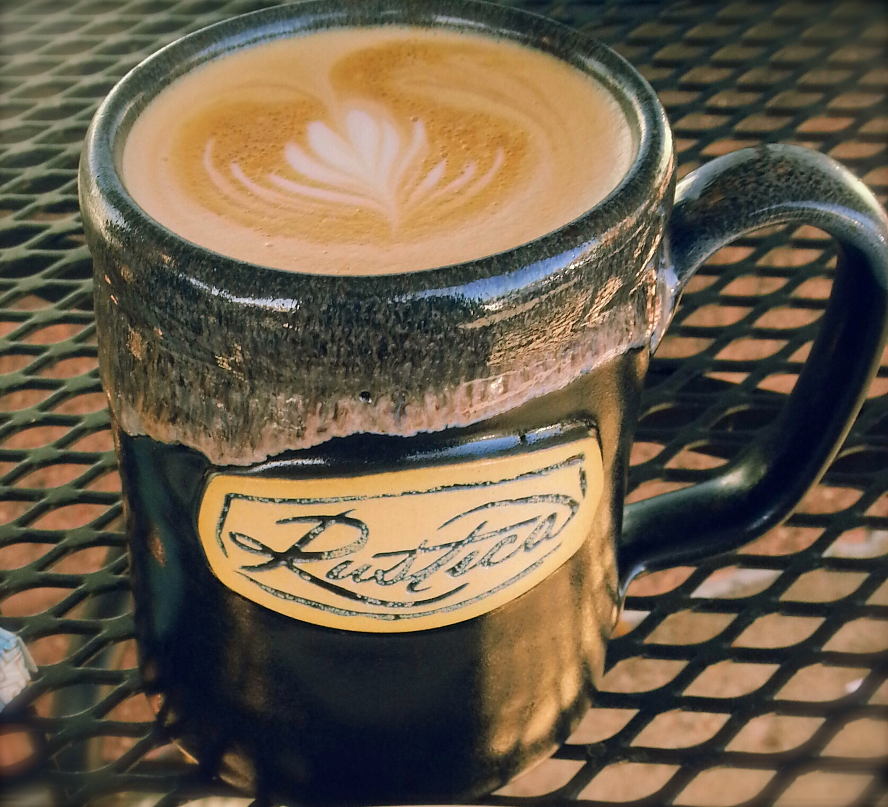

Design Best Practice Checklist
To view a detailed evaluation of the JavaJam site created in earlier chapters, please select a Design Best Practice topic from the tabs on the right.
Content Presentation
- Common fonts that will render in any browser are used.
- Writing techniques for the web are used, such as headings, brief paragraphs, etc.
- Fonts, font sizes, and colors are used consistently.
- The JavaJam website uses fonts, font sizes, and font colors consistently.
- The content provides meaningful and useful information, but could go into further detail.
- The information is easy to find on the JavaJam website (except for the jobs information).
- The content is NOT organized in a consistent manner from tab to tab. It has a messy feel to it.
- The date of the last revision is not present, but the copyright year is present.
- The content seems not to include outdated material. We assume that for all educational purposes,
the music tab is up to date, even though by the curent months standards it isn't.
- The content of the JavaJam website appears to be free of typographical errors.
- The words 'click here' are thankfully not present anywhere on this website.
- Although the hyperlinks look outdated, they do use a consistent set of colors to at least show
which is currently being clicked on. There is nothing to show which tabs have already been visited.
- There is alternate text equivalent provided for text and media.